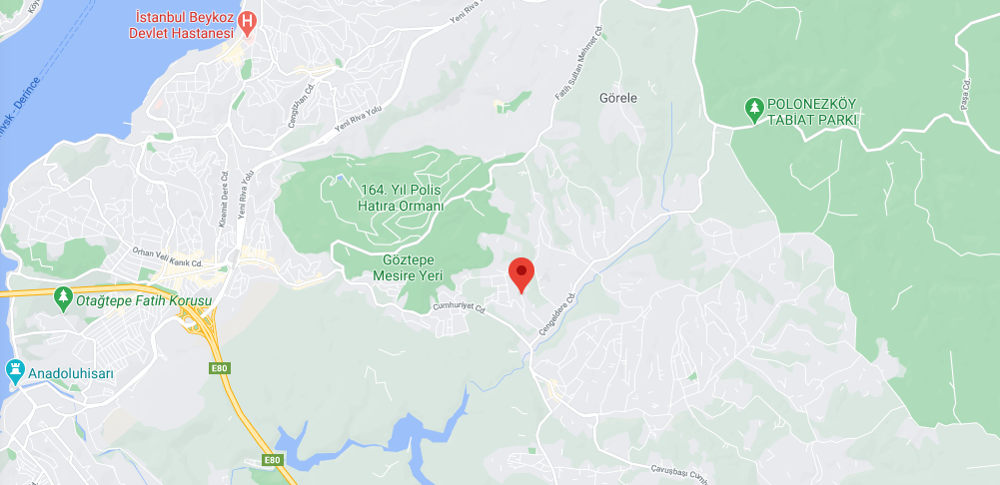

İLETİŞİM
BİZE ULAŞMAK ÇOK KOLAY !
Psikoblog Ailesi Olarak Fikirlerinizden İlham Almak İstiyoruz.
Her Türlü Öneri ve Eleştirileriniz İçin
Mesajınızı Bize İletmeyi Unutmayın
Harita

" Eleştiri belki güzel bir şey değildir ama gereklidir, ağrı ile aynı işi görür; çünkü ağrı da vücutta bir arıza olduğunu haber verir. "
William Churchill
Adres
Çengeldere mah. Gündoğdu cad. Pazarlar sok. No 4/1
Beykoz/İSTANBUL
Bize Ulaşabileceğiniz Numaralar
(+90) 536-256 25 45
(+90) 532-257 95 44